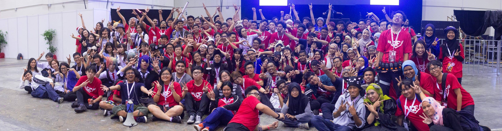
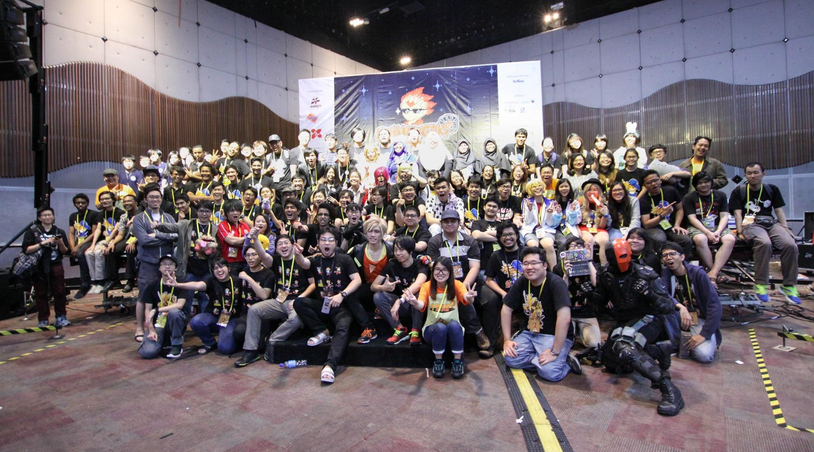

Comic Fiesta (2015-2016)
With around 40,000+ attendees, this is the largest Anime, Comic and Games(ACG) event in Malaysia. I've volunteered as part of the logistics crew, responsible for providing neccessities and equipment from our inventory to our crew. While I've mostly worked as the muscle of the operation, I did take part in some of the various administritive work revolving around the logistics side of the event.
Animangaki (2014-2016)
The 2nd biggest ACG event in Malaysia, ran by college and university students who wanted to make their own event inspired by Comic Fiesta, this was my first experience as a volunteer. Similar to Comic Fiesta, I've worked as logistics but instead of working for the entire event, I worked for a small booth which gave me much more leeway and flexibility in terms of how much say I have in its operation.
Zoo Negara (2014)
After graduating from Highschool, I've decided to volunteer for our National Zoo, to see what it's like to take care of the animals living there. I helped in cleaning the animal enclosures and feeding the animals while I was there. It was a very fun education experience that taught me of the work that the Zoo's staff does in and outside of Zoos.